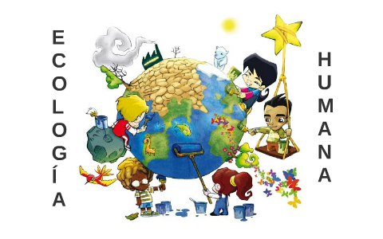
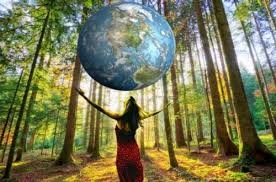

LOS SERES HUMANOS VOLVEMOS A SER OBJETO DE ESTUDIO EN ESTA RAMA DE LA ECOLOGÍA, LA CUAL LLEVA EL NOMBRE DE ECOLOGÍA HUMANA DEBIDO A QUE A
TRAVÉS DE ELLA SE PRETENDEN COMPRENDER NUESTROS PATRONES DE CONDUCTA CON LAS ZONAS QUE NOS RODEAN. EN ESTA RAMA INTERVIENEN NO SOLO FACTORES
BIOLÓGICOS SINO TAMBIÉN SOCIALES.
LA ECOLOGÍA ES LA CIENCIA DE LAS RELACIONES ENTRE LOS SERES VIVOS Y SU MEDIO AMBIENTE. LA ECOLOGÍA HUMANA TRATA DE LAS RELACIONES ENTRE LAS
ERSONAS Y EL MEDIO AMBIENTE. EL MEDIO AMBIENTE, EN LA ECOLOGÍA HUMANA SE PERCIBE COMO UN ECOSISTEMA.
LA ECOLOGÍA HUMANA ES UN ESTUDIO INTERDISCIPLINARIO Y TRANSDISCIPLINARIO DE LA RELACIÓN ENTRE LOS HUMANOS
Y SU ENTORNO NATURAL, SOCIAL Y AMBIENTE CONSTRUIDO.
QUE NOS ENSEÑA LA ECOLOGÍA HUMANA:
LA ECOLOGÍA ES LA CIENCIA QUE TIENE POR OBJETO EL ESTUDIO DE LA RELACIÓN QUE ESTABLECEN LOS SERES VIVOS Y EL MEDIO AMBIENTE EN EL QUE
SE DESARROLLAN, DEL MISMO MODO ESTUDIA CÓMO SE DISTRIBUYEN Y EL PORQUÉ DE SU ABUNDANCIA EN UN ÁREA DETERMINADA, Y CÓMO ESAS PROPIEDADES SON
AFECTADAS POR LA INTERACCIÓN.

CUÁL ES LA CARACTERÍSTICA DE LA ECOLOGÍA HUMANA:
CARACTERÍSTICAS DE LA ECOLOGÍA HUMANA:
LA ECOLOGÍA HUMANA SE CARACTERIZA POR: LA EXISTENTE RELACIÓN, ENTRE LOS SERES VIVOS Y EL ENTORNO QUE ORIGINAN PRODIGIOS DE RETROALIMENTACIÓN,
GENERANDO ASÍ UNA ESTABILIDAD QUE CONSERVA LAS PARTES DEL SISTEMA INTRÍNSECO A LA LIMITACIÓN NECESARIA PARA LA SUPERVIVENCIA.
CUÁL ES LA IMPORTANCIA DE LA ECOLOGÍA HUMANA:
LOS ESTUDIOS DE ECOLOGÍA HUMANA SON FUNDAMENTALES PARA LA SOCIEDAD PORQUE PERMITEN: CONOCER LA HISTORIA Y EL ESTADO ACTUAL DE LA RELACIÓN
SOCIEDAD-AMBIENTE Y DE LAS POBLACIONES HUMANAS. IDENTIFICAR, DISEÑAR Y PROBAR ALTERNATIVAS PARA MEJORAR LAS CONDICIONES DE VIDA DE LAS
POBLACIONES HUMANAS.

CUÁLES SON LOS PRINCIPIOS DE LA ECOLOGÍA HUMANA:
REDUCE, RECICLA Y REUTILIZA.
LA FÓRMULA DE LAS 3 R ES VITAL PARA ADOPTAR LOS PRINCIPIOS DE LA ECOLOGÍA SOCIAL: MENOS CONSUMO, CLASIFICACIÓN DE RESIDUOS
Y REUTILIZACIÓN DE MATERIALES Y PRODUCTOS QUE MEREZCAN UNA SEGUNDA OPORTUNIDAD.
QUÉ ES LA ECOLOGÍA HUMANA Y CUÁLES SON SUS OBJETIVOS:
BÁSICAMENTE, SE ESTUDIA LAS INTERACCIONES QUE SE PRODUCEN ENTRE EL SISTEMA SOCIAL Y EL ENTORNO EN UN DETERMINADO CONTEXTO O ECOSISTEMA,
CENTRANDO LA CUESTIÓN EN LA ORGANIZACIÓN SOCIAL Y EL EMPLEO DE LA TECNOLOGÍA Y DE LOS CONOCIMIENTOS PARA ALTERAR EL MEDIO AMBIENTE PARA
LA SUPERVIVENCIA Y LA EXPLOTACIÓN.